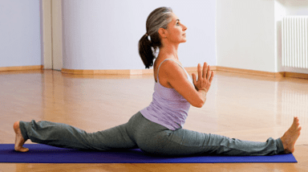

Discover The 8-Minute Stretching Flows That can
Multiply Your Flexibility,
Boost Core Strength And Relieve
Your Back, Hips Or Shoulders In The Next 30 Days
Regardless Of Your Age, Body Type Or Fitness Level Even
If You Think You're The Least Flexible Person On The Planet
If You Think You're The Least Flexible Person On The Planet

SPECIAL 68% OFF TODAY!
Essential Stretches for Tight Hamstrings and Hip Flexors
Ever find yourself fixated on stretching a particular part of your body? When your hamstrings are tight,
for example, you might zero in on doing hamstring stretches. Despite your desire to target one area,
however,
that’s not how your body works.
Everything is interconnected. Just as you can’t fully appreciate the experience of daylight without also
experiencing night,
you can’t stretch a particular muscle without acknowledging (or at least inadvertently incorporating)
the muscles that support it.
Take those tight hamstrings. Understanding exactly how they and nearby muscles support one another
isn’t essential for you to practice hamstring stretches and find relief.
But understanding how your hip flexors can contribute to the problem—and, in turn,
help alleviate it—enables you to more effectively address the situation.
The Anatomy of Tight Hamstrings and Hip Flexors
The hamstrings fall on the opposite side of your thigh bone. They comprise three muscles that originate on
the ischial tuberosity (your sit bones),
run along the back of the thigh, cross behind the knee joint,
and attach to the lower leg. When your knee bends, the hamstrings contract. When your leg straightens,
they lengthen.
The contraction, or shortening, of the hip flexor muscles happens in tandem with the lengthening,
or stretching, of the hamstring muscles. For example, in a forward bend, the hip flexors contract
to help you bend forward at your hips, which lengthens the hamstrings. Same thing happens when you
draw your knee toward your chest.
But if the hip flexors are tight or weak, this can lead to an anterior (forward) tilt of the pelvis.
This forward tilt, ironically, creates tension in the hamstring muscles.
Instead of helping your hamstrings become more flexible, this constant tugging causes them to feel even
tighter.
Stretches for Tight Hamstrings and Hip Flexors
The secret to Hyperbolic Stretching lies in the development of the pelvic muscle floor.
Most people are unable to achieve full range of motion and reach their optimum level
of Flexibility due to a natural 'survival reflex' that causes muscles to automatically
contact when strached . By targeting the pelvic muscles with the special isolation
excercises detailed in Hyperblic Stretching, you can, in effect , switch off this automatic
tension relax and open a whole of muscle elasticity.
Hyperbolic Streaching can help you strengthen your pelvic muscles in shorter time than
conventional Streaching regimen . To date , thousands of people have benefited from
this effective program.
By learning the 8 - minute flexibility trick, you will be able to do high kicks and split easily. Plus,
your muscles will get stronger , not weaker compare to conventional mehthods of stretching.
Benefits of Hyperbolic Streaching
.jpg)
Flexibility refers to the range of motion that your body is capable of .A good stretch workout will help you
increase your body's range of motion . It may greatly increase the range of motion and amount of flexibility
in your body.
Hyperbolic Stretching delivers an 8-Minute stretching practice that improves muscles such as pelvic
floor muscles, and lower body muscles.
Hyperbolic Stretching delivers has even been shown to be effective in treating chronic stress and depression
in some circumstance . As for the company's clamis , they also said on their website that the program
provides mental health advantages and promotes a healthy mindset . Streaching is generally related
to mental relief, ,especialy.
What is inside Hyperbolic Stretching
How to do full splits and high kicks in easy
Precisely estimate the number of days you will need to drop into those full splits.
Avoid the single mistake that even experienced athletes make while stretching for static/dynamic
flexibility.
Discover the secret to unleashing your full flexibility capabilities. Discover the secret to incresing your
muscle
elasticity. Discover the secret to incresing your muscle elasticity.
Discover the tricks to quadrupling core strength and overall vitality.Learn a shortened stretching routine
that even
the busiest of people can use in the gym , at home , or wherever they happen to be.Leverage improved
flexibility
to enhance physical skills , athletic training , and daily living. Leverage improved flexibility to enhance
physical
skills , athletic traning , and daily living.
Leverage improved flexibility to enhance physical skills , athletic traning , and daily living.Master a
3-second muscle
concentration techniques that will allow you drop into full splits, kick higher or strike advanced yoga
poses. Improve
overall flexibility by stretching for just six minutes per week.
SPECIAL 68% OFF TODAY!